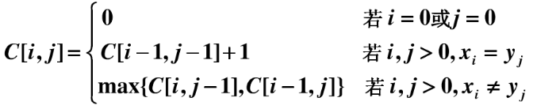
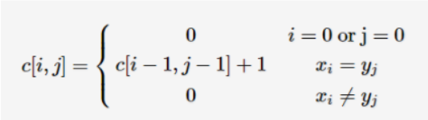
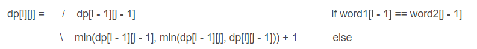

最长上升子序列
【题目描述】
给定N个数，求这N个数的最长上升子序列的长度。
【样例输入】
7
2 5 3 4 1 7 6
【样例输出】
4
第一种解法：时间复杂度O(n^2)，
状态设计：DP[ i ]代表以A[ i ]结尾的LIS的长度
状态转移：DP[ i ]=max{ DP[ j ]+1 ，DP[ i ] }(1<=j< i,A[j]< A[i])。
基本上思想，每次碰到一个数，就从头遍历，看插在哪个后面的值最大就保留那一个。
1 |
|
第二种解法：时间复杂度O(nlogn)，优化在查询的时候。我们新建一个dp数组，dp[i]表示长度为 i 的LIS结尾元素的最小值。对于一个上升子序列，显然其结尾元素越小，越有利于在后面接其他的元素，也就越可能变得更长。因此，我们只需要维护dp数组，对于每一个a[i]，如果a[i] > dp[当前最长的LIS长度]，就把a[i]接到当前最长的LIS后面，即dp[++当前最长的LIS长度]=a[i]。 否则，就用a[i]取更新dp数组。具体方法是，在dp数组中找到第一个大于等于a[i]的元素dp[j]，用a[i]去更新dp[j]。如果从头到尾扫一遍dp数组的话，时间复杂度仍是O(n^2)。我们注意到dp数组内部一定是单调不降的，所有我们可以二分dp数组，找出第一个大于等于a[i]的元素。二分一次dp数组的时间复杂度的O(logn)，所以总的时间复杂度是O(nlogn)。
1 |
|
最长公共子序列
问题描述
给定两个字符串，求解这两个字符串的最长公共子序列（Longest Common Sequence）。比如字符串1：BDCABA；字符串2：ABCBDAB
则这两个字符串的最长公共子序列长度为4，最长公共子序列是：BCBA
解法：c[i,j]表示：(x1,x2….xi) 和 (y1,y2…yj) 的最长公共子序列的长度。

1 |
|
最长公共子串
比如字符串1：cnblogs；字符串2：belong
则这两个字符串的最长公共子串长度为2，最长公共子串是：lo。
解法：c[i,j] 表示：(x1,x2….xi) 和 (y1,y2…yj) 的最长公共子串的长度。

1 |
|
01背包
有N件物品和一个容量为V的背包。第i件物品的价格（即体积，下同）是w[i]，价值是c[i]。求解将哪些物品装入背包可使这些物品的费用总和不超过背包容量，且价值总和最大。
这是最基础的背包问题，总的来说就是：选还是不选，这是个问题<(￣ˇ￣)/
相当于用f[i][j]表示前i个背包装入容量为v的背包中所可以获得的最大价值。
对于一个物品，只有两种情况
情况一: 第 i 件不放进去，这时所得价值为:f[i-1][v]
情况二: 第 i 件放进去，这时所得价值为：f[i-1][v-c[i]]+w[i]
状态转移方程为：f[i][v] = max(f[i-1][v], f[i-1][v-w[i]]+c[i])。
可以优化到一维：
1 | for (int i = 1; i <= n; i++) |
1 |
|
完全背包
有N 种物品和一个容量为V 的背包，每种物品都有无限件可用。第i ii种物品的费用是w[i] ，价值是v[i] 。求解将哪些物品装入背包可使这些物品的费用总和不超过背包容量，且价值总和最大。
完全背包和01背包十分相像， 区别就是完全背包物品有无限件。由之前的选或者不选转变成了选或者不选，选几件。
和01背包一样，我们可以写出状态转移方程：f[i][v]=max(f[i-1][v-k*c[i]]+k*w[i]|0<=k*c[i]<=v)，
1 |
|
编辑距离
编辑距离的定义是：从字符串A到字符串B，中间需要的最少操作权重。这里的操作权重一般是：
1.删除一个字符(deletion)
2.插入一个字符(insertion)
3.替换一个字符(substitution)
解法：dp[i][j] 表示从 word1 的前i个字符转换到 word2 的前j个字符所需要的步骤。当word1[i] == word2[j]时，dp[i][j] = dp[i - 1][j - 1]，其他情况时，dp[i][j]是其左，左上，上的三个值中的最小值加1，其实这里的左，上，和左上，分别对应的增加，删除，修改操作，转移方程如下：

1 | class Solution { |
两个字符串的最小ASCII删除和
从字符串A到字符串B，每次删除一个字符，求最少ASCII操作权重。
解法思想和上面的差不多，但是问题是要加上那个ASCII 的值，保证这个值最小。
1 | class Solution { |